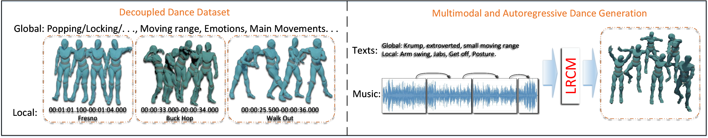
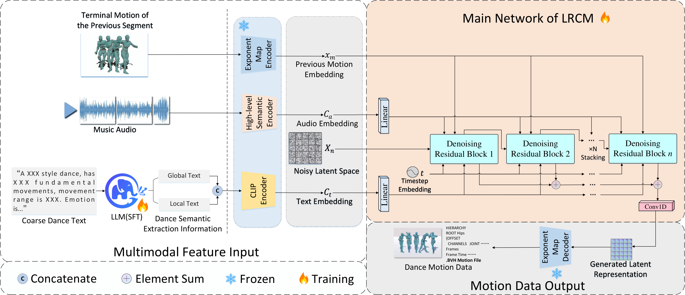

Advances in generative models and sequence learning have greatly promoted research in dance motion generation, yet challenges remain in fine-grained semantic control and long-sequence coherence.
We introduce LRCM (Listen to Rhythm, Choose Movements), a multimodal-guided diffusion framework that simultaneously leverages audio rhythm and hierarchical text descriptions (global style + local movements) for high-quality, controllable dance synthesis across 7 dance genres.
Key innovations include: (1) a Decoupled Multimodal Dance Dataset paradigm separating motion, audio, and text for fine-grained alignment; (2) a Heterogeneous Multimodal-Guided Diffusion Architecture with Audio-latent Conformer and Text-latent Cross-Conformer; and (3) a Motion Temporal Mamba Module (MTMM) for efficient autoregressive long-sequence generation.
Feature-decoupling paradigm separating motion capture data, audio rhythm features, and professionally annotated text descriptions (global style + local movement) for fine-grained semantic alignment across 7 dance genres.
Stacked denoising residual blocks with Audio-latent Conformer for rhythmic cues and Text-latent Cross-Conformer for fine-grained semantic understanding from global and local text conditioning.
State space model-based autoregressive extension enabling efficient long-sequence generation via bidirectional Mamba scan for smooth temporal transitions across segments.

